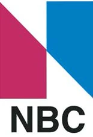
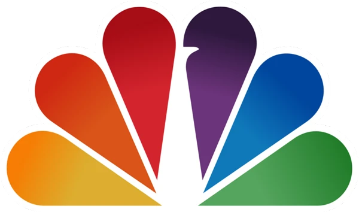
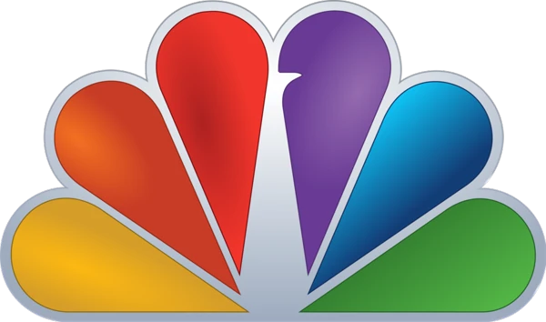
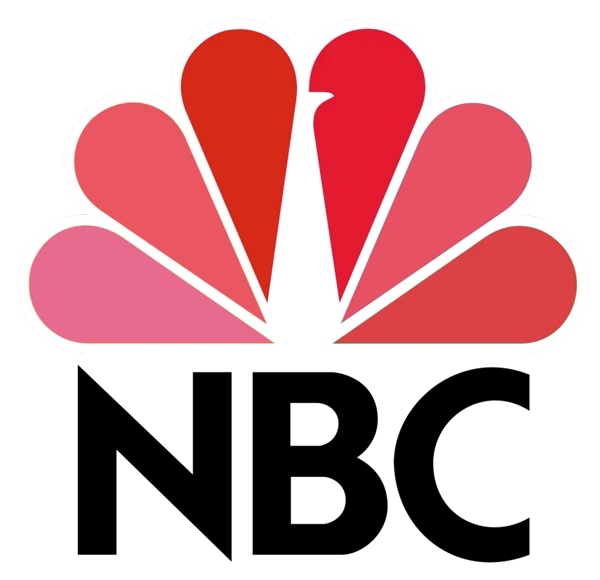
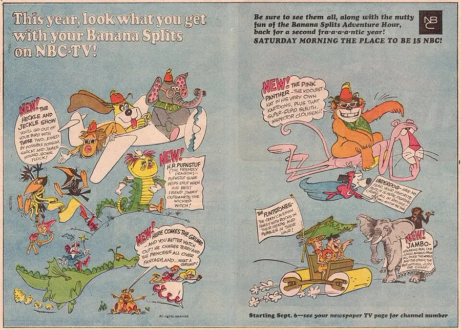
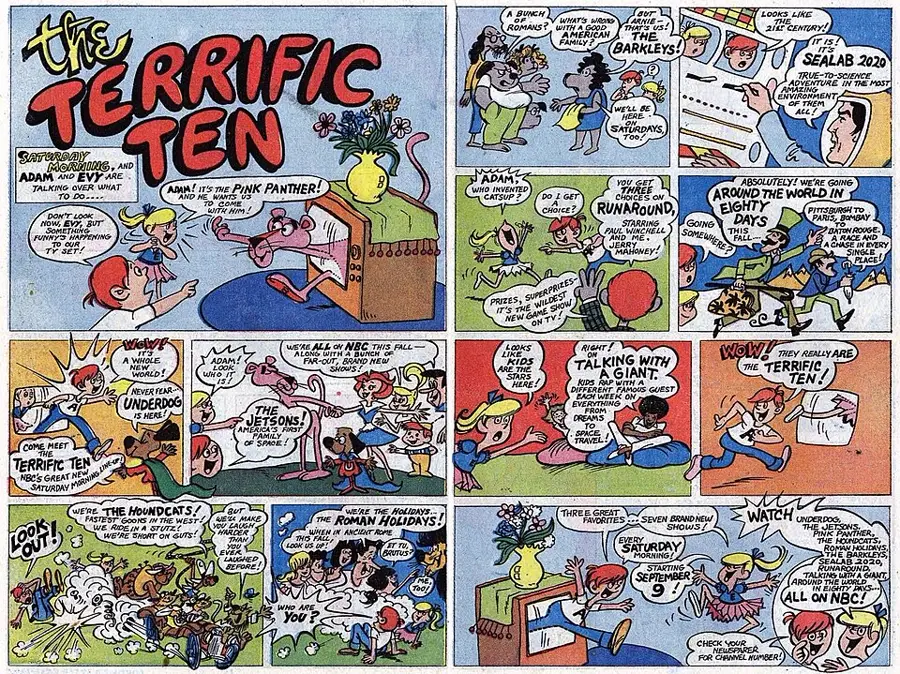

NBC
NBC(NBC)는 미국의 방송사로, 뉴욕 시 록펠러 센터의 GE 빌딩에 본사를 두고 라디오와 텔레비전 방송을 전개하는 NBC유니버설 소속 기업이다.
최종 업데이트

NBC는 어떤 브랜드인가
NBC는 1926년 라디오 방송을 시작하고 1938년 텔레비전 방송을 시작한 미국 방송사이다. 초기에는 음악·예능 중심의 레드 네트워크와 뉴스·문화 중심의 블루 네트워크를 함께 운영했다.
두 네트워크는 미국연방통신위원회의 결정에 따라 분리됐으며, 레드 네트워크는 NBC로 남고 매각된 블루 네트워크는 ABC로 전환했다. NBC는 실험 방송과 상업 방송을 거쳐 정규 텔레비전 방송을 개국했으며, NTSC 방식의 컬러 시험 방송과 컬러 정규 방송도 시행했다.
현재는 미디어 회사 NBC유니버설에 속해 방송 프로그램과 지역 방송망을 운영하는 방송사이다.
NBC는 어떻게 시작되고 성장했나
NBC는 RCA와 데이비드 사노프가 창업자로 기록된 방송사로, RCA가 WEAF와 WJZ를 인수한 뒤 1926년 11월 15일 공식 출범했다. 1927년에는 WEAF 중심의 레드 네트워크와 WJZ 중심의 블루 네트워크로 체계를 분리했다.
1930년 실험용 텔레비전 방송국 W2XBS를 설립하고 시험 송신과 시험 방송을 진행했으며, 1941년에는 뉴욕 시에서 상업 텔레비전 방송국 WNBT를 설립하고 정규 방송을 개국했다. 이후 RCA가 제너럴 일렉트릭에 인수됐고, 2004년 유니버설 스튜디오와의 합병을 통해 NBC유니버설을 출범했다.
NBC의 브랜드 아이덴티티는 무엇인가
음악·예능과 뉴스·문화로 구분했던 초기 네트워크 운영의 역사와 여섯 색 공작 형상 로고가 NBC를 구분하는 핵심 요소이다.
NBC의 대표 제품과 서비스는 무엇인가
NBC의 사업은 라디오와 텔레비전 네트워크 운영 및 방송 프로그램 제공을 중심으로 구성한다. 초기 레드 네트워크는 음악과 예능 프로그램을, 블루 네트워크는 뉴스와 문화 프로그램을 제공했다.
텔레비전 부문에서는 뉴스·예능·드라마·퀴즈 프로그램을 편성하며, 대표 프로그램으로 투데이, 새터데이 나이트 라이브, 더 보이스, 제퍼디를 포함한다. 드라마와 시트콤에는 ER, 프렌즈, 오피스, 웨스트 윙, 히어로즈, 팍스 앤 레크리에이션 등을 포함하며 지역 방송사 체계도 운영한다.
NBC는 지금 어떤 상태인가
NBC는 현재 NBC유니버설에 속하며 뉴욕 시 록펠러 센터의 GE 빌딩에 본사를 둔 방송사이다. 제시된 지분 자료에서는 컴캐스트가 NBC유니버설의 51%, GE가 49%를 소유했으며, GE의 잔여 지분 매각 뒤 컴캐스트가 대주주가 된 구조로 설명한다.
방송 브랜드에는 여섯 개의 꼬리를 지닌 추상화된 공작 형상 로고를 사용한다.
NBC 로고는 어떻게 변해왔나

1975–2009
2009–2011
2011–2011
2011–2017- 2022–2022
- 2022–2023
시기는 위키데이터 로고 기간 또는 위키미디어 커먼즈 파일 정보 기준입니다. 이미지를 누르면 원본 파일과 라이선스를 볼 수 있습니다.
사진으로 보는 NBC의 역사


자주 묻는 질문
NBC는 어느 나라 브랜드인가요?
NBC는 미국의 미디어·엔터테인먼트 브랜드입니다.
NBC는 언제 설립되었나요?
NBC는 1926년 설립되었습니다.
NBC의 브랜드 아이덴티티는 무엇인가요?
음악·예능과 뉴스·문화로 구분했던 초기 네트워크 운영의 역사와 여섯 색 공작 형상 로고가 NBC를 구분하는 핵심 요소이다.
NBC의 대표 제품은 무엇인가요?
NBC의 사업은 라디오와 텔레비전 네트워크 운영 및 방송 프로그램 제공을 중심으로 구성한다.
NBC는 현재 어떤 상태인가요?
NBC는 현재 NBC유니버설에 속하며 뉴욕 시 록펠러 센터의 GE 빌딩에 본사를 둔 방송사이다.
NBC의 창업자는 누구인가요?
NBC의 창업자는 RCA, 데이비드 사르노프입니다(위키데이터 기준).
NBC의 본사는 어디에 있나요?
NBC의 본사는 GE 빌딩에 있습니다(위키데이터 기준).
출처와 검증
NBC 관련 참고: 공식 웹사이트 · 위키데이터 Q13974 · 한국어 위키백과 · 영어 위키백과. 브랜드명은 한글과 원어를 함께 표기하되 데이터에 없는 표기는 만들지 않습니다. 기원 국가·설립연도는 검수된 정의문에서 확인된 값을 우선하고, 없을 때만 공식 웹사이트 URL이 일치하는 위키데이터 개체의 값을 씁니다. 웹 첫 보관은 인터넷 아카이브가 공식 사이트 첫 화면을 처음 보관한 날로, 사이트 개설일과 다를 수 있습니다. 위키데이터 값은 2026-09-12 기준입니다.